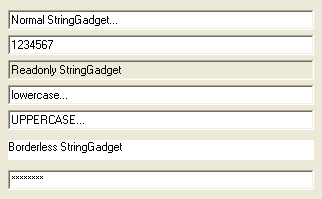

StringGadget()
语法
Result = StringGadget(#Gadget, x, y, Width, Height, Content$ [, Flags])概要
Creates a String gadget in the current GadgetList. It allows the user to enter a single line of text.
参数
#Gadget A number to identify the new gadget. #PB_Any can be used to auto-generate this number. x, y, Width, Height The position and dimensions of the new gadget. Content$ The initial content of this StringGadget. This gadget accepts only one line of text. To get multi-line input, use the EditorGadget() function. Flags (optional) Flags to modify the gadget behavior. It can be a combination of the following values: #PB_String_Numeric : Only (positive) integer numbers are accepted. #PB_String_Password : Password mode, displaying only '*' instead of normal characters. #PB_String_ReadOnly : Read-only mode. No text can be entered. #PB_String_LowerCase : All characters are converted to lower case automatically. #PB_String_UpperCase : All characters are converted to upper case automatically. #PB_String_BorderLess : No borders are drawn around the gadget.
返回值
Returns nonzero on success and zero on failure. If #PB_Any was used as the #Gadget parameter then the return-value is the auto-generated gadget number on success.
备注
Later the content can be changed with SetGadgetText() and received with GetGadgetText().
The following events are supported through EventType():#PB_EventType_Change : The text has been modified by the user. #PB_EventType_Focus : The StringGadget got the focus. #PB_EventType_LostFocus : The StringGadget lost the focus.The following functions can be used to act on this gadget:
- SetGadgetColor() and GetGadgetColor() functions with the following values as 'ColorType':#PB_Gadget_FrontColor: Textcolor #PB_Gadget_BackColor : Backgroundcolor- GetGadgetAttribute() with the following attribute:#PB_String_MaximumLength: Returns the maximum number of characters which can be entered.- SetGadgetAttribute() with the following attribute:#PB_String_MaximumLength: Set the maximum number of characters which can be entered.A 'mini help' can be added to this gadget using GadgetToolTip().
示例
; Shows possible flags of StringGadget in action... If OpenWindow(0, 0, 0, 322, 205, "StringGadget Flags", #PB_Window_SystemMenu | #PB_Window_ScreenCentered) StringGadget(0, 8, 10, 306, 20, "Normal StringGadget...") StringGadget(1, 8, 35, 306, 20, "1234567", #PB_String_Numeric) StringGadget(2, 8, 60, 306, 20, "Read-only StringGadget", #PB_String_ReadOnly) StringGadget(3, 8, 85, 306, 20, "lowercase...", #PB_String_LowerCase) StringGadget(4, 8, 110, 306, 20, "uppercase...", #PB_String_UpperCase) StringGadget(5, 8, 140, 306, 20, "Borderless StringGadget", #PB_String_BorderLess) StringGadget(6, 8, 170, 306, 20, "Password", #PB_String_Password) Repeat : Until WaitWindowEvent() = #PB_Event_CloseWindow EndIf

参阅
GetGadgetText(), SetGadgetText(), GetGadgetColor(), SetGadgetColor(), EditorGadget()
已支持操作系统
所有